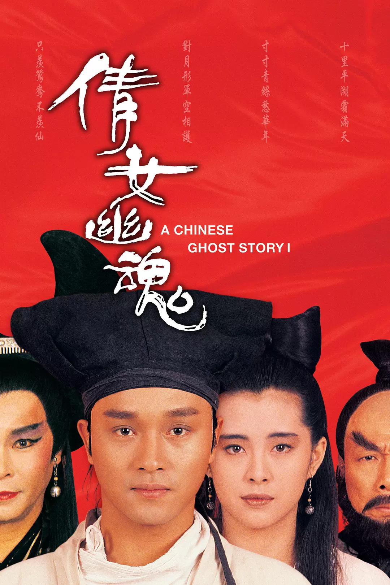
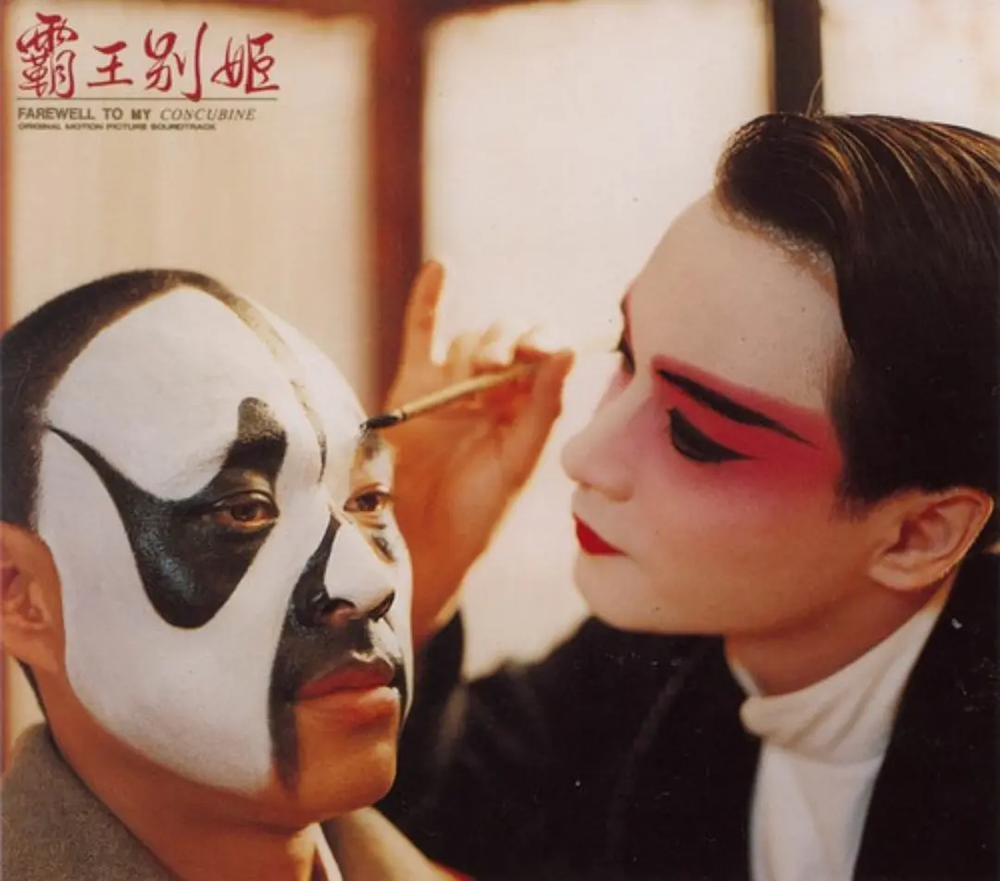
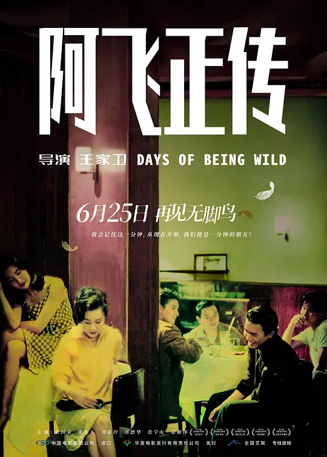
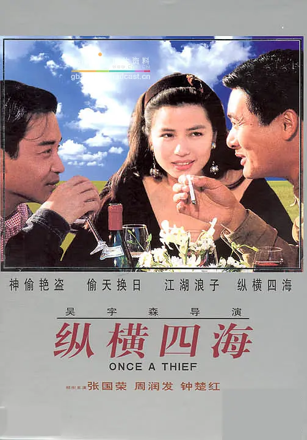
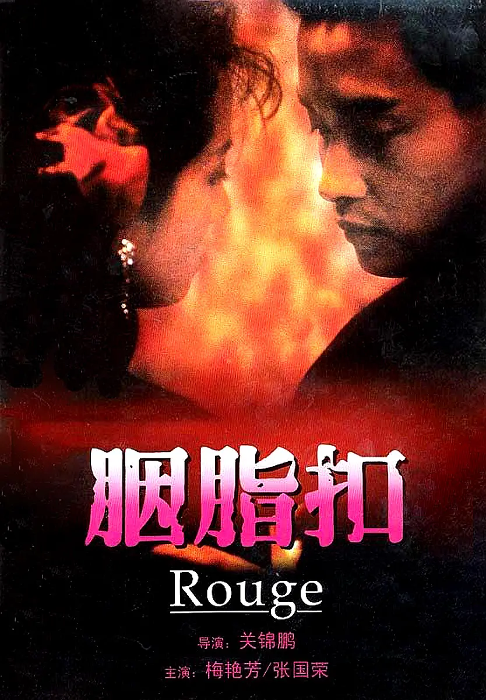
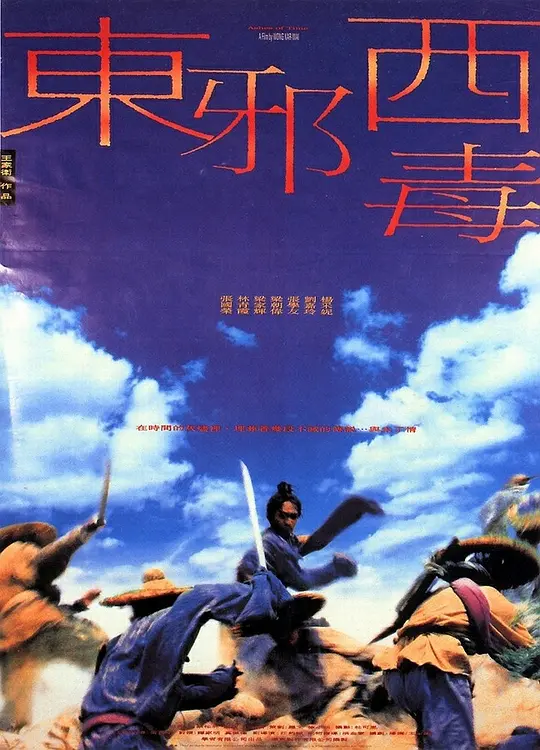
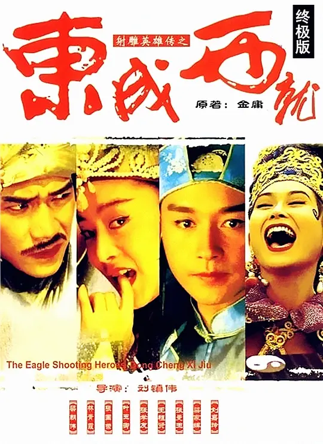
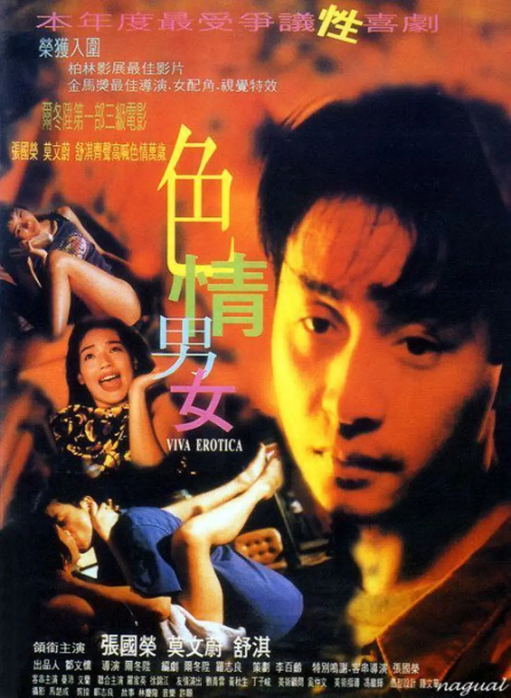
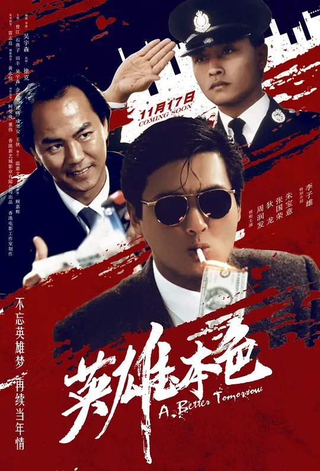

电影作品
一.1987年《倩女幽魂》

主演：张国荣、王祖贤、午马等
这是一部极为经典的古装鬼片，可以看做是此类题材的巅峰之作，此片在当时极为火爆，也令张国荣的书生宁采臣形象深入人心。
在他之后，银幕上还掀起了一股书生的热潮。此后原班人马又出演了第二部，但影响力已不能与本片同日而语。
二.1993年《霸王别姬》

主演：张国荣、张丰毅、巩俐等
此片可以说是张国荣演绎生涯最重要的作品，没有之一。
因为他要扮演京剧名角程蝶衣，所以他在片中有不少花旦造型，尤其是他的虞姬扮相，
足可以用眉目如画、风华绝代来形容，堪称惟妙惟肖。
该片在当时屡获国际大奖，而张国荣仅以一票之差错失戛纳影帝，原因竟然是有个评委将他投了一票最佳女演员奖，这也是没谁了
三.1990年《阿飞正传》

主演：张国荣、梁朝伟、刘嘉玲、张学友等
这是由王家卫执导的一部电影，他的电影，不管你看不看的懂，都不能否认它的价值。
本片对于张国荣来说，意义极其重大，凭借此片，他将金像奖影帝收入囊中，这也是他演绎生涯最具份量的一次影帝大奖。
但坦白讲，这并不是他最好的作品，
四.1991年《纵横四海》

主演：周润发、张国荣、钟楚红等
此片的经典程度已毋庸置疑，可以看做是吴宇森枪战片的巅峰之作，全片远赴法国巴黎取景拍摄，异域风情一览无遗。
这也是张国荣和周润发继《英雄本色》后的再次携手，
再加上钟楚红实力助阵，这样的组合可谓极其养眼。
五.1987年《胭脂扣》

主演：张国荣、梅艳芳、万梓良、朱宝意等
这是一部奇幻爱情文艺片，虽然有鬼，但却一点也不恐怖，只是讲述了一段跨越时空的人鬼情缘，
整部影片哀怨缠绵、迷离凄楚。有些演员就是这样，当他们演过某个角色之后，你会发现，这个角色以不作他人想。
正如该片一样，除了张国荣和梅艳芳，相信没人能将十二少和如花的爱情诠释的如此恰到好处。
六.1994年《东邪西毒》

主演：张国荣、梁家辉、梁朝伟、张学友等
本片是由王家卫执导，但与其说是一部武侠片，不如说是一部小清新的爱情文艺片。
张国荣在片中扮演西毒欧阳锋，很难想象，金庸笔下心狠手辣的老毒物，
会变的像古龙小说中的人物一样孤独、痛苦而多情，有人甚至认为这是他演过的最好的角色。
七.1994年《东成西就》

主演：张国荣、张曼玉、梁朝伟、梁家辉、王祖贤等
本片可以看作是《东邪西毒》的姐妹篇，是一部全明星阵容的贺岁喜剧，
张国荣在片中疯狂耍宝，极尽搞笑之能事，绝对是一次颠覆形象的演出。
这也充分证明了他演技的可塑性，亦庄亦谐，可深沉内敛，也可癫狂卖萌。
八.1996年《色情男女》

主演：张国荣、舒淇、莫文蔚、徐锦江等
这是著名导演尔冬升当年执导的一部艺术片，虽然片中有不少露点镜头，但是一点也不色情，
张国荣在片中扮演一个失意落魄的导演，不得已之下沦落到拍色情片，因此片中有不少戏中戏的场面。
不过该片最成功的，还是舒淇了，当时还是艳星的她，凭借此片连获两项大奖，成功转型。
九.1986年《英雄本色》

主演：狄龙、周润发、张国荣等
由于周润发和狄龙两个人气场太强，张国荣在片中的表演难免被忽略了。
但本片之所以能够顺利开拍，都是源于张国荣，毕竟当时他的名气远比其他两位主角要大的太多。
同时，他还演唱了本片主题曲《当年情》，记得在他去世那年的金像奖上，四大天王就是清唱的这首歌。